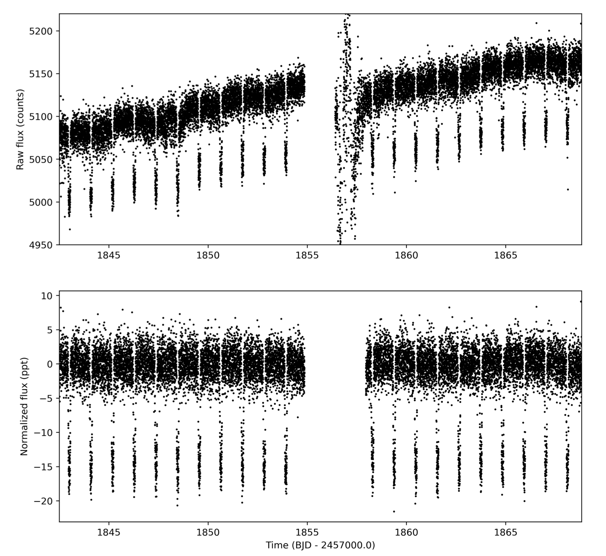
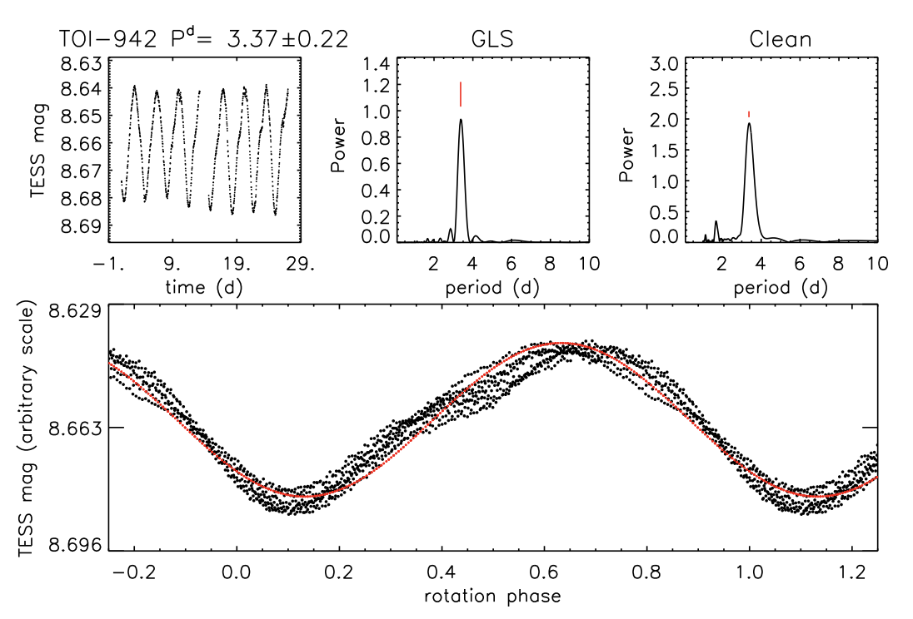
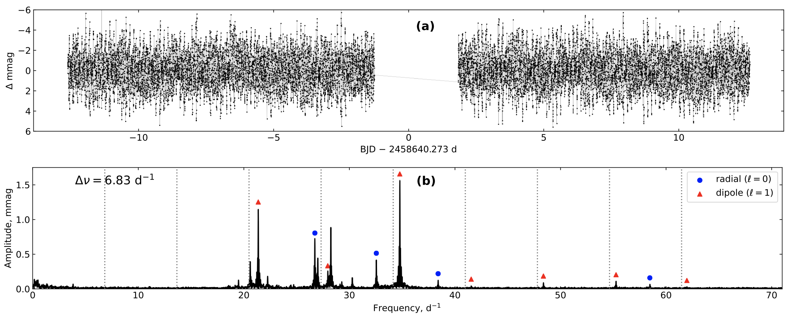

STATUS UPDATE: Don't forget, TESS Cycle 4 proposals are due in January 22nd 2021.
Welcome TESS followers to our weekly news bulletin. This week we have kind of a big one to make up for our absence last week. Enjoy!
TESSVisibility -- When was my favorite star or asteroid observed by TESS? (Pál, 2020):
This paper demonstrates a new tool called tessvisibility. Utilizing this tool the user can easily retrieve the current and/or predicted visibility of a bulk amount of objects in the TESS field of view. The tool considers both stationary and moving Solar System targets like asteroids or comets. The code itself is highly portable, and accurately includes the gaps between the focal plane CCDs, and the gaps between the cameras.
Decaying Orbit of the Hot Jupiter WASP-12b: Confirmation with TESS Observations (Turner et. al., 2020):
The orbits of some giant planets close to their host stars can decay due to tidal interactions. To date only one hot Jupiter system has been found to do this, WASP-12b. This orbit decays at a rate of 29 msec per year.
The authors of this paper used TESS data to verify that the orbit of WASP-12b is indeed changing. They found that transit and occultation are consistent with a decaying orbit with an updated period of 1.091 days, and a decay rate of 32.53 msec per year.
The orbital decay timescale was found to be 2.90 Myr, and that if the observed decay were due to tidal dissipation then the modified tidal quality factor is 1.39 x 105. This tidal quality factor is at the lower end of the values currently derived for binary star systems and hot Jupiters.
The GAPS Programme at TNG XXVIII -- A pair of hot-Neptunes orbiting the young star TOI-942 (Carleo et. al., 2020):
Young stars and multi-planet systems allow scientists to understand and constrain planetary formation and evolution theories. In this paper the authors validate the nature of two Neptune like planets transiting TOI-942.
TOI-942 is a young 50 Myr star observed in TESS sector 5. By modeling the TESS light curve and utilizing radial-velocity measurements, the authors confirm the planetary nature of the candidate in addition to detecting another transiting planet in a larger orbit.
Through detailed analysis of photometric and spectroscopic data the authors determine planet and stellar parameters for the system. TOI-942 is a K2.5V star with rotation period of 3.39 days, a projected rotation velocity of 13.8 km/s and a radius of ~0.9 Rsun. The inner planet, TOI-942b, has an orbital period of 4.3263 days, a radius of 4.242 R⊕, and a mass upper limit of 16 M⊕. The outer planet, TOI-942c, has an orbital period of 10.1605 days, a radius of 4.793 R⊕, and a mass upper limit of 37 M⊕.
HD 63021: Chromospheric Activity and Mass Transfer in a Close Binary Whelan et al 2020 (Whelan et. al., 2020):
The authors investigate the A-type star HD 63021 and find that it is a double-lined spectroscopic binary with highly variable emission associated with the primary star. From multi-epoch spectroscopy an orbital period of 2.9 days is determined, along with a mass ratio M2 / M1 of 0.23.
The slowly rotating A1 V star has a rotational speed of ∼34 km/s. The mass of the primary is assumed as 2.3 M⊙, with the mass of the secondary being ∼0.5 M⊙.
The secondary is thought to be an evolved star which almost fills its Roche lobe. The rotation of the secondary is more rapid than the primary at ∼44 km/s, there is also evidence that it is chromospherically active.
TESS light curves indicate that there are two strong periods, one matches that of the orbital period and the other is at half the orbital period. The authors findings suggest that HD 63021 is a close binary system undergoing unsteady mass transfer from the secondary star to the primary.
A precise asteroseismic age and metallicity for HD 139614: a pre-main-sequence star with a protoplanetary disc in Upper-Centaurus Lupus (Murphy et. al., 2020):
The star known as HD 139614 is a 14Myr old, possibly pre-main sequence star found in the Sco-Cen OB association in the Upper Centaurus-Lupus subgroup. The system has a slightly warped circumstellar disc with ring structures, hinting at the possibility of planets. The star is thought to be metal deficient except for volatile elements, which makes it a λ Boo class star meaning that it may have recently accreted gas-rich dust poor material.
Using the TESS light curve and an échelle diagram authors identify seven dipole and four radial pulsation modes among the stars δ Sct pulsations. Using the MESA stellar evolution and GYRE stellar oscillation programs for modeling the authors confirm that HD 139614 is on the pre-main sequence. Further analysis indicates that the star has an age of 10.75 Myrs, a mass of 1.52 M⊙, and a global metal abundance of Z=0.0100.

Fig 1. Taken from Turner et al, (2020).TESS light curve of WASP-12b in Sector 20. Top: Raw simple aperture photometry light curves. Bottom: Detrended Pre-search Data Conditioning (PDC) time series. .

Fig 2. Results of periodogram analysis of TOI-942. In the top-left panel: the complete TESS magnitudes time series vs. heliocentric Julian Day. In the top-middle panel: the Generalized Lomb-Scargle periodogram, indicating the peak corresponding to the rotation period. In the top-right panel: the CLEAN periodogram. In the bottom panel: the light curve phased with the rotation period. The solid line represents the sinusoidal fit.

Fig 3. Taken from Murphy et. al., (2020). The TESS sector 12 light curve of HD 139614. The δ Sct pulsations are shown with 0.4–1.2 h periods. The (b) label represents the Fourier transform of the TESS light curve. The frequencies show a characteristic spacing, especially at high frequency, which we identify as the large separation of Δv = 6.83 d shown for the modes the authors could identify. A precise asteroseismic age and metallicity for HD 139614: a pre-main-sequence star with a protoplanetary disc in Upper-Centaurus Lupus